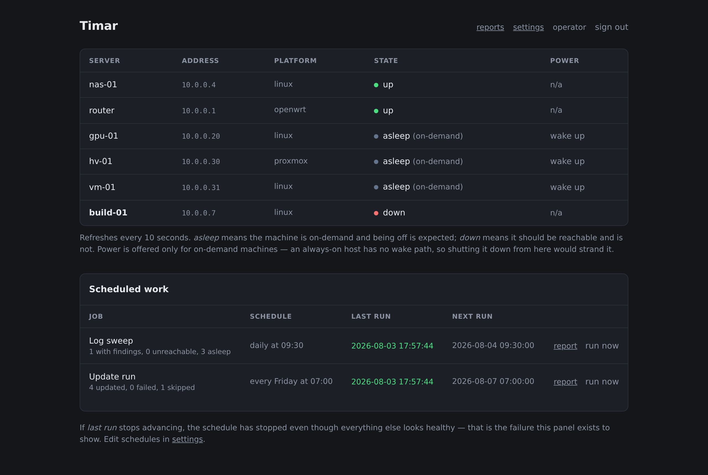
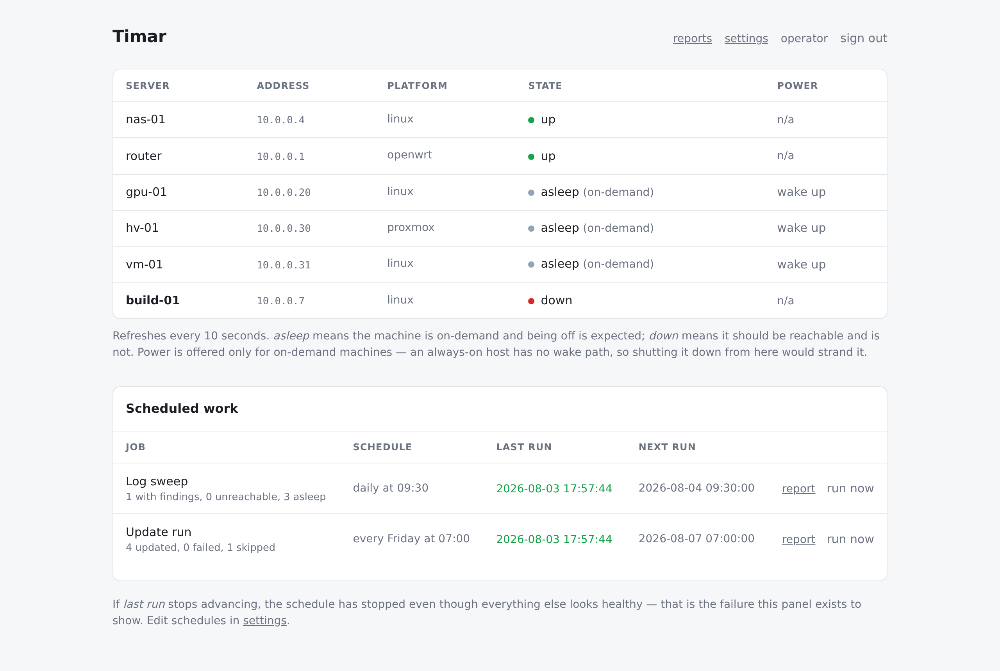

MIT · one container · no agents
Timar wakes the machines in your homelab, updates them, reads their logs, and puts them back the way it found them. Nothing is installed on the machines it manages — it needs SSH, and Wake-on-LAN for the ones that sleep. Between runs they stay dark, which is the point, and the reason most of them are off in the first place.
v0.1.0amd64 + arm64Linux · OpenWrt · ProxmoxMIT licensed


The problem
Homelab machines are mostly off. The GPU box runs when you need it, the hypervisor wakes for a job, the build server sits dark for a week. Every tool built for always-on fleets assumes an agent that reports in — which is the one thing a machine that is powered down cannot do. So the machines that go longest without a security update are exactly the ones nothing is watching.
Timar inverts it. Waking the host is step one of the job, and shutting it back down is the last. A machine that was off before the run is off after it.
What a run does
apk upgrade can fill the
overlay or land a kernel-module mismatch, and the machine that breaks is the one
carrying the session you would repair it from.The reports outlive the notification. Every finished run is archived and readable in the UI, so a disk creeping upward or an update failing every Friday shows up as a series rather than a single snapshot. Telegram delivery is a copy, not the only place the findings exist.
Measured, not assumed
A magic packet that never leaves the host. A disk check that exits non-zero and reports all-clear. A schedule that stops firing and writes no error anywhere. None of these announce themselves, so the decisions behind them were measured rather than reasoned about — and the measurements are written down in ARCHITECTURE.md.
Wake-on-LAN from a bridge network: the send succeeds, no error, and tcpdump
on the LAN sees nothing. Host networking, same image, same button: one packet. That is
why the compose file ships network_mode: host.
Most of the fleet is supposed to be unreachable, so a probe timeout is the normal case. Probes run in parallel behind a short TTL: the page costs one timeout, not one per sleeping machine.
One Alpine image, running as a non-root fixed UID, for amd64 and arm64. A Raspberry Pi is a first-class host — it is what Timar is written on.
Platforms
A check that cannot run on a platform says so, instead of quietly reporting all-clear.
Every command was run against a real host of that platform before it was written down:
busybox and coreutils disagree in ways that fail silently — one df flag GNU
accepts and busybox rejects turned into a disk check that passed on every router it was
pointed at.
| Platform | System log | Disk | Containers | Unattended updates |
|---|---|---|---|---|
| Linux (systemd) | journalctl | yes | Docker | yes |
| Proxmox VE | journalctl | yes | guests via qm | yes |
| OpenWrt | logread | yes | — | off by default |
Run it
$ curl -O https://raw.githubusercontent.com/orkun-soylu/timar/main/docker-compose.yml $ docker compose up -d
Then open http://<host>:8080 and create the operator account. Nothing else
answers until you do — the first screen is the only one served before an account exists.
Everything an installation is lives in one directory (/data): config,
credentials, state, reports and the SSH key. Backup and migration are cp -a.
Do not expose this to the internet. Timar holds an SSH key that reaches
every machine it manages and can grant itself sudo on them. The login page
is the only thing in front of your fleet. Keep it on a private network, or behind a
reverse proxy you control.
SSH, and Wake-on-LAN for the machines that sleep. Timar generates its own keypair on first use, installs it with your password once, and pins each host key on first sight.
A model to summarise sweeps (Anthropic, any OpenAI-compatible endpoint, or Ollama) and Telegram for delivery. Without either, waking, updating and the sweep all still work — you get the raw findings instead of a written assessment.